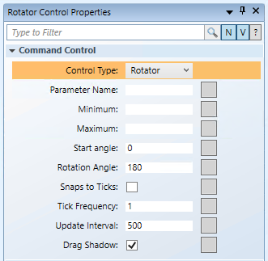

Draw a Rotator Command Control
The following instructions are just one example of how a rotator command can be drawn and used to command from within a graphic.
- You have reviewed or completed the Preparing to Create Controls to Command Objects workflow.
- To create a new command control on your graphic, from the File menu, select New Graphic
 .
. - From the Home tab, in the Elements group, click Command Control
 .
. - Draw a command control rectangle on the canvas.
NOTE: The command control object layout and dimensions have no effect on how the command control behaves. The behavior is determined by the command control and Thumb properties. - From the Property View (Command Control Properties), expand the Command Control properties, and from the Control Type drop-down menu, select Rotator.

- To draw the Rotator thumb, from the Elements group, select a drawing or image element to draw or depict a thumb.
- For this example: from the Elements group, click the Polygon
 element and draw a polygon at the top and center of the graphic.
element and draw a polygon at the top and center of the graphic. - Expand the Polygon property and in the Node field, type 3, and in the Offset field, type
180. - For the Thumb (Polygon) to be selectable during runtime, from the Brushes group view, select the Fill
 drop-down menu, and from the color palette, select #FFFFFFFFF (white).
drop-down menu, and from the color palette, select #FFFFFFFFF (white). - To configure the center of the Rotator, you must edit the thumb’s properties.
- From the Property View (Polygon Properties), expand the Layout group, and in the Angle center X field, type 50% and then press ENTER. The Angle Center
 displays on the top center of the element. This ensures the thumb rotates correctly around the center.
displays on the top center of the element. This ensures the thumb rotates correctly around the center. - To set the radius of your rotation, in the Angle center Y field, for this example, type 250%.
NOTE: With the Angle center X in the middle of the thumb, the Angle center Y is equal to the radius of the rotation. When configuring the Rotator Command Control Properties, many values will depend on the Angle Center coordinates. - In the Element Tree, press the CTRL key, and select the Rotator element and the Polygon element, and then right-click and from the Group menu that displays, select Join or Leave Command Control.
- In the Element Tree, the Polygon now represents the thumb (child) of the Rotational command control.
- You have created the foundation of your Rotator command control.